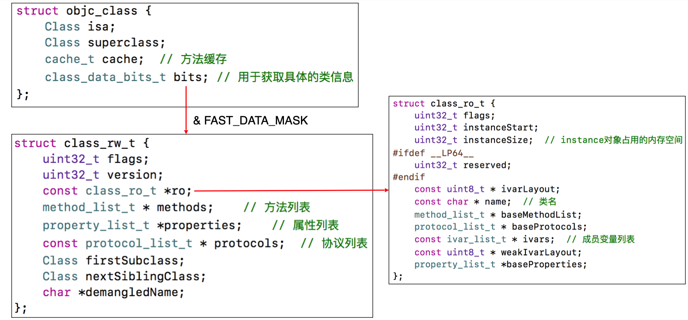

对象的分类
iOS对象分为以下三类
实例对象
实例对象就是通过类alloc出来的对象，每次调用alloc都会产生新的instance对象
例如NSObject *objc = [[NSObject alloc] init];
其中objc就是实例对象
实例对象中存储的信息包括
- isa指针
- 其他成员变量(isa也可以看作一个特殊的成员变量)
类对象
class对象是一个类的对象,每个类在内存中有且仅有一个类对象,类对象(元类对象也一样)在程序启动时就已经装载在内存中了.
获取类对象的方法有如下几种
1 | NSObject *object1 = [[NSObject alloc] init]; |
打印结果如下图,我们可以看到地址都是一样的,这表明NSObject在内存中有且仅有一个类对象
类对象存储的信息有
- isa指针
- superclass指针
- 类的属性信息(@property)、类的实例方法信息(instance method)
- 类的协议信息(protocol)、类的成员变量信息(不包括成员变量的值) 等等其他
元类对象
meta-class是用来描述类对象的类.每个类都有自己对应的元类对象
获取元类对象的方法是将类对象传到object_getClass()方法中获取的参考类对象的代码我们可以Class metaClass = object_getClass(objectClass1)
这样获取,metaClass就是NSObject的元类对象.
元类对象中存储的信息
- isa指针
- superclass指针
- 类方法信息
isa和superclass的指向
上面这张图可以完美解释isa和superclass在实例对象、类对象和元类对象中的作用
总结一下有以下几点
- instance的isa指向class
class的isa指向meta-class
meta-class的isa指向基类的meta-class - class的superclass指向父类的class
如果没有父类,superclass指针为nil - meta-class的superclass指向父类的meta-class 基类meta-class的superclass指向基类的class
- instance调用实例方法的轨迹
通过isa找到class对象,方法不存在,就通过superclass找父类 - class调用类方法的轨迹
通过isa找到meta-class对象,方法不存在,就通过superclass找父类
总之可以看出,调用方法时,首先你要搞清楚方法是在哪里(实例方法是存储在类对象里面,类方法是存储在元类对象里面),然后通过isa找到对应的对象,找不到就再通过superclass去父类里面找.isa->superclass->…->superclass=nil,如果最终还是找不到就会报经典错误unrecognized selector sent to xxx.
注意一点,在64位的环境下,instance对象的isa并不是直接指向类对象的,他会通过一次&位运算才能计算出真实的类对象地址instance->isa & ISA_MASK = class对象的内存地址,ISA_MASK的值可以在objc源码中找到.
1 |
但superclass指针则是直接指向父类对象的真实地址
Class的结构
我们在Xcode上追踪Class的结构可以看到typedef struct objc_class *Class;
再追踪进去看objc_class的结构,发现是这样的
1 | struct objc_class { |
这表明在OC2.0里面objc_class的结构体里只有一个isa指针,下面的都已经过时了,这时候我们需要去objc的源码工程里面去找了,找到以下代码
1 | struct objc_class : objc_object { |
发现objc_class结构体实际上是继承objc_object的,然后我们再去看看objc_object
1 | struct objc_object { |
可以看到objc_object的结构体里面只有一个isa,所以objc_class的结构体里面有isa、superclass、cache、bits和一个class_rw_t *data(),可以看到是直接返回的bits.data(),跟进去看下
1 | class_rw_t* data() { |
可以看到就是bits和FAST_DATA_MASK进行了了一次位与运算,然后强制转成class_rw_t类型,然后我们进去看下class_rw_t的结构
1 | // 类的方法、属性、协议等信息都保存在class_rw_t结构体中 |
可以看到这个里面就有方法信息、属性信息和协议信息,还有一个只读的ro表,跟踪下去可以看到
1 | // class_ro_t结构体存储了类在编译期就已经确定的属性、方法以及遵循的协议 |
可以看到这个里面也有方法、协议等信息,这是因为ro表里面存储的是在编译期间就已经确定的信息,这里面的信息只可以读取不可以写入,通过这些信息整理一下,可以得到整个class的结构.

Mark一篇更为详细的文章Objective-C runtime - 属性与方法